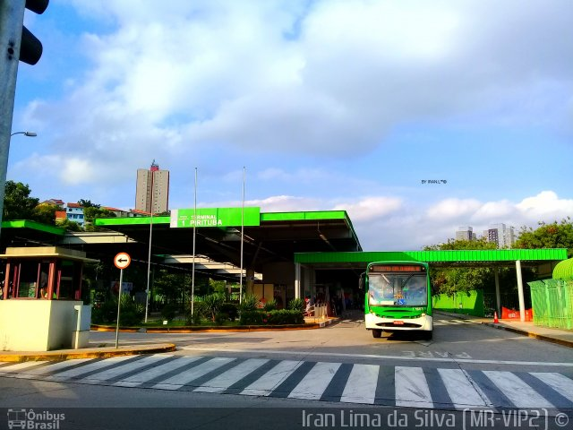
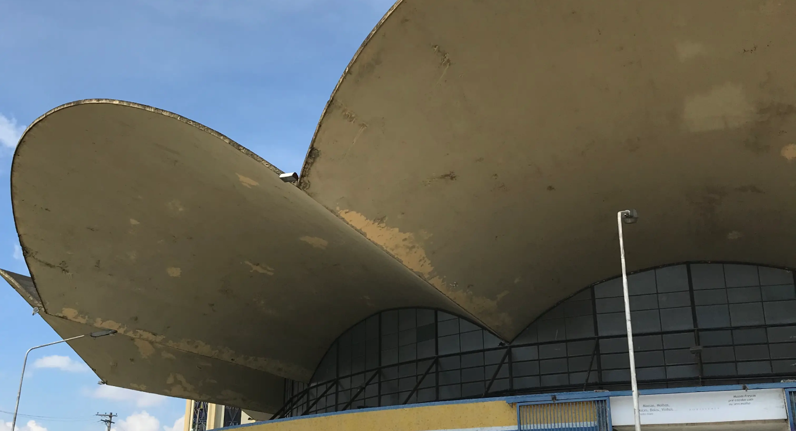

Portal Pirituba

Portal Pirituba
Esta é a loja da Swift localizada na Avenida do Anastácio! A loja possui 16 vagas e é uma das maiores de sua rede e uma grande variedade de produtos desde a picanha até o donut de doce de leite! [1]

O terminal Pirituba atende 36 linhas, e está localizado na Avenida Doutor Felipe Pinel, 60 - Pirituba. Importante ressaltar que por conta da pandemia do Covid-19 o atendimento nos postos instalados nos terminais de Ônibus da SPTrans foi alterado temporariamente das 6h às 22h, de segunda a segunda. Clique no botão abaixo para acessar o site:
Este mercado municipal iniciou suas construções em meados de 1966, e foi inaugurado em 1972. Na década de 70 foi premiado ganhou um premio internacional de estrutura no México e no Japão. Sua cobertura de formato semelhante a uma flor ou um guarda-chuva fez da obra uma das realizações mais importantes no setor de construção de edificações. [2]
A estação Pirituba foi inaugurada em 1885 pela São Paulo Railway, porém por volta de 1964 passou por reformas construindo uma passarela e mais uma plataforma Atualmente atende aos trens metropolitanos da CPTM. Faz parte da linha 7 - RUBI assim como indicado abaixo:

Inaugurada em 2021, está é mais uma unidade da rede de fast food, Burguer King. Contém um extenso cardápio, ambiente aconchegante e um ótimo atendimento. Também possui acessibilidade drive-thru e um grande espaço externo para os consumidores aproveitarem e degustarem seus pedidos do cardápio.